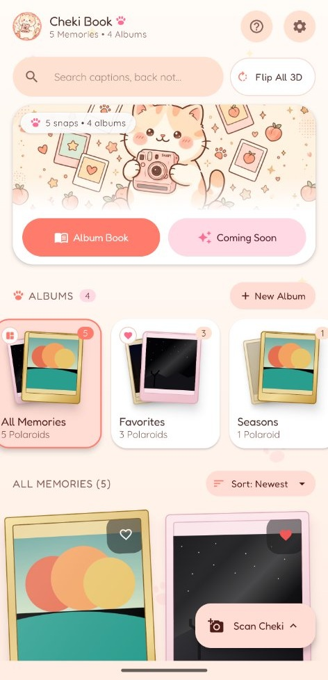

Hover to feel 3D gyroscope tilt. Click any print to flip it over and read the handwritten back note.
Nine tactile frames, five instant film stocks, two sides to every story
Import any photo from your gallery and style it like a real print. Switch frame paper, test analog emulsions, and flip the card in 3D to write memories on ruled archival stock.
Rotate your phone to open a physical two-page scrapbook
In landscape mode, every album transforms into a ring-bound keepsake book with page-curl turns, 8 curated paper themes, and die-cut vinyl stickers you can place anywhere.
01
02
Pages 1 to 2 of 4
Digitize real prints with four-corner perspective crop
Point your camera at a physical Polaroid. Cheki Book's edge detector locates all four corners automatically and rectifies the tilted print into a crisp, flat archival card.
Malibu Cove '24
See Cheki Book running on Android in light and dark themes
Browse real captures of the home vault, 3D frame picker, and landscape ring-bound album book. Toggle between light pastel and cozy dark mode to preview both themes.

Home Vault in light mode: Peach Paws banner, Flip All 3D, album shelves, and instant search.
Shake to shuffle, tilt to shimmer
Real hardware sensors bring your digital prints to life. Tilt your phone to catch holographic specular sheen across metallic foil and glossy frames, or give the device a quick shake to shuffle your vault and rediscover forgotten snaps.
Multi-album shelves and instant search
File a single Polaroid into multiple albums at once, favorite your best shots, and filter across front captions, handwritten back notes, dates, and locations in milliseconds.
Switch between English and Japanese live
Toggle the entire interface between English and 日本語 from the top bar with zero restart, localizing every frame name, album shelf, and scanner prompt automatically.
Local-first vault with free JSON export
All photos and notes live offline in a local Room database on your device. Export or import complete JSON backups for free anytime, or upgrade to Cheki Cloud+ for automatic Google-authenticated Firestore sync across devices.
Ready to open your own Cheki Book?
Crafted natively for Android with Jetpack Compose, Room persistence, CameraX perspective scanning, and optional Firebase Cloud Sync.